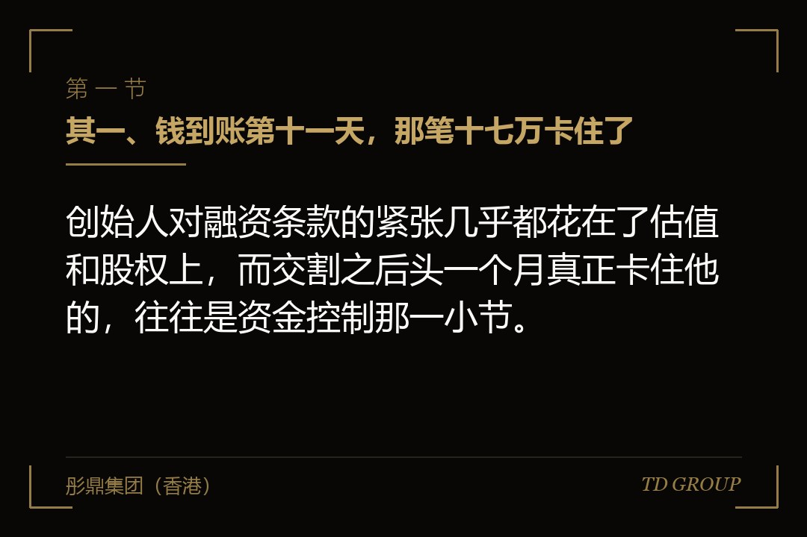
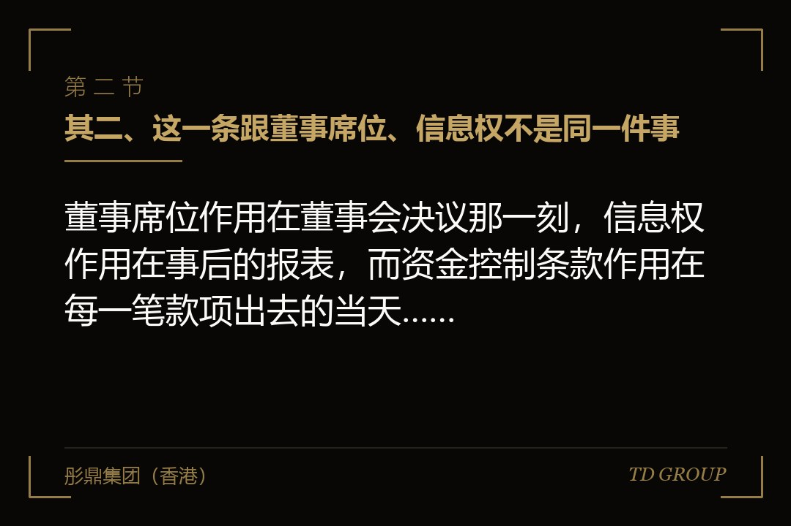
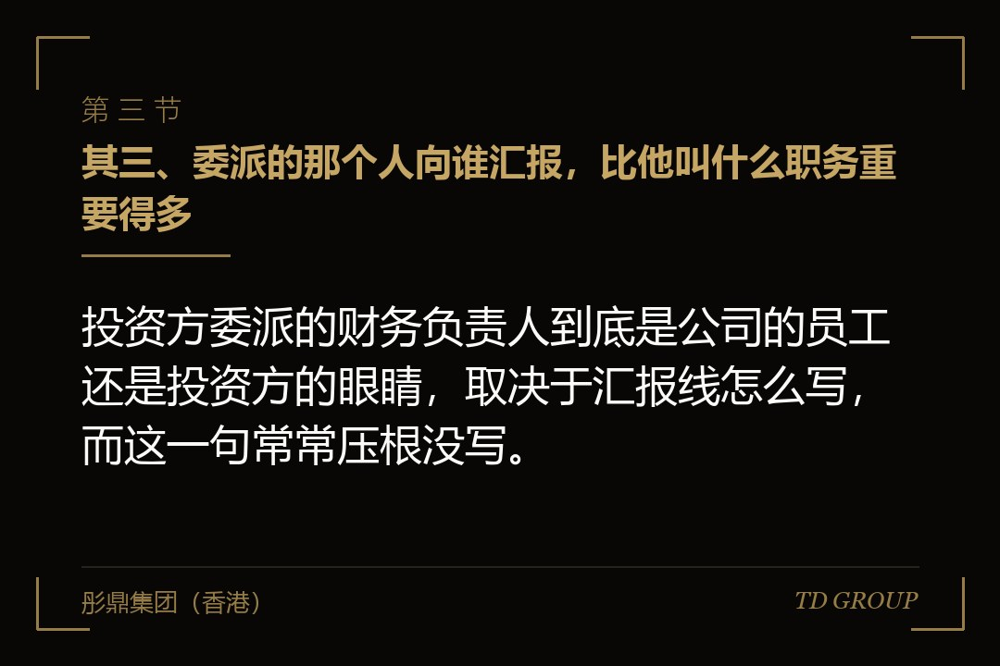

其一、钱到账第十一天，那笔十七万卡住了

结论先行：创始人对融资条款的紧张几乎都花在了估值和股权上，而交割之后头一个月真正卡住他的，往往是资金控制那一小节。
假设有家做医用耗材的公司，八十来人，这一轮融了三千万，交割很顺利，钱在约定的日子到了账。创始人心情不错，第二天就把拖了两个月的一批原材料订单批了出去。
第十一天出事。一笔十七万的模具款走到财务，被退了回来，理由是超过了单笔十万的联签线，需要投资方委派的那位财务负责人在网银上做第二次审核。那位负责人当天在外地，第二天回复说这笔付款没有对应的采购合同扫描件，要补齐再走。
模具厂那边等了三天，把排产往后挪了两周。创始人在电话里跟投资人吵了一架，对方也很意外——他们并不知道这笔钱的事，条款是律师按标准模板放进去的，那位财务负责人只是照条款办事。
这件事的性质要看清楚：没有人违约，没有人使坏，条款也很常规。出问题的是双方在签字那天都没有具体想过，这条款每天会以什么形状落在这家公司的经营上。
其二、这一条跟董事席位、信息权不是同一件事

结论先行：董事席位作用在董事会决议那一刻，信息权作用在事后的报表，而资金控制条款作用在每一笔款项出去的当天，三者触发频率差着数量级。
投资人对被投企业的约束，通常沿三条线铺开。头一条是治理线，落点是董事会席位与保留事项，管的是增资、并购、对外担保、处置核心资产这类不常发生但一次能改变公司命运的事。
第二条是信息线，落点是月报、季报、年度审计报告与查阅权，管的是投资人事后能看到什么。它的特点是不干预，只观察，出问题时的补救手段主要是行使别的权利。
第三条就是资金线，落点是财务负责人的人选、印鉴与网银的保管、以及付款的审批门槛。它跟前两条最大的不同在于频率：董事会一个季度开一次，报表一个月出一份，而付款每天都在发生。
所以同样是"投资人的权利"，创始人对三条线的体感完全不成比例。董事席位签的时候争得最凶，交割之后一年也遇不上几次；资金控制条款签的时候几乎不看，交割之后每一天都在用。
所以判断一份协议对日常经营的实际影响，看这三条线里资金线写到了哪一格，比数董事会有几个席位更准。席位决定的是重大事项上的话语权，资金线决定的是这家公司明天早上还能不能按原来的节奏运转，两件事的时间尺度不一样。
其三、委派的那个人向谁汇报，比他叫什么职务重要得多

结论先行：投资方委派的财务负责人到底是公司的员工还是投资方的眼睛，取决于汇报线怎么写，而这一句常常压根没写。
实务里这个安排有三种常见写法，标题看着差不多，分量完全不同。差别不在职务名称，在人事权与报告义务这两处落在谁那一边——而这两处恰恰最容易被当成程序性表述略过去。
写法一：投资方有权推荐财务负责人人选，由公司聘任。这一档最轻。人是公司的员工，签公司的劳动合同，拿公司的工资，向创始人汇报，投资方只有推荐权。发生分歧时，他站在公司这边。
写法二：财务负责人由投资方委派，公司应予聘任，其解聘须经投资方同意。这一档是中间态，也是实务里最常见的。人在公司领薪，但去留由投资方说了算，所以实际的汇报关系是双线的——遇到需要选边的事，他多半会先给投资方打电话。
写法三：委派人员同时向投资方定期报告公司资金与经营状况。这一档最重。它把汇报义务写成了明文，等于在公司内部安装了一条独立于创始人的信息通道。
对创始人来说，判断自己签的是哪一档，办法是看协议里有没有出现"解聘须经投资方同意"和"定期向投资方报告"这两句。有一句是第二档，两句都有是第三档，一句都没有的才是最轻的那一档。
创始人在这一格能争的东西其实不少：把解聘权改成"经双方协商"、把定期报告的内容限定在财务数据而不包括经营决策、以及约定这位负责人对公司同样负有保密与勤勉义务。
其四、实际控制权是拆在印鉴、网银和执照这几样东西上的
结论先行：账上的钱能不能动，法律上写在协议里，物理上落在公章、财务专用章、法人章、网银盾和营业执照这几件东西谁拿着。
条款文字通常写得很简略，比如"公司印鉴与网银由双方共同管理"。落到执行层面，共同管理有很多种拆法，后果差别很大。
印鉴这一侧，常见的拆法是公司公章与合同章留在公司、财务专用章由投资方委派人员保管，或者反过来。财务专用章配合法人章才能开出支票与办理银行业务，所以它握在谁手里，直接决定了柜面业务谁说了算。
网银这一侧，多数银行的企业网银把权限分成录入、复核、授权几级，一笔付款要走完全部环节才能出去。把其中一级交给投资方委派的人，是最常见也最平顺的做法——它不改变公司的日常流程，只是在最后一步加了一个人。
营业执照正副本与开户许可资料这一类，实务上偶尔也会被写进共管清单。这一档要谨慎：执照被拿走影响的不只是付款，是招投标、资质年审、银行开户等一大批日常事务，它跟资金控制不是一个目的。
有一条边界值得写进协议：共管的对象应当限定在与资金支付直接相关的印鉴与权限上，公司经营所必需的证照与业务用章仍由公司自行保管。这句话看着啰嗦，出事的时候能省掉一场停摆。
其五、金额门槛定在哪，决定了这条款是围栏还是绊索
结论先行：门槛定得太低，公司每天都要为几万块钱等对方回复；定得太高，条款形同虚设，投资人过一段时间还会回来重谈。
先看定得太低的后果。开头那家医用耗材公司的门槛是单笔十万。一家八十人的制造企业，一个月超过十万的付款通常有十几笔——原材料、模具、外协加工、社保公积金、场地租金。等于每个月有十几次要看外地那位负责人的日程。
再看定得太高。有的协议写单笔五百万，对一家年营收几千万的公司来说，一年也遇不上一次。这种写法看着是创始人赢了，实际上埋了一颗雷：投资人一旦发现自己没有任何实际抓手，会在下一轮或者出现分歧时把这件事重新提出来，而那时候的谈判筹码通常不如现在。
比较务实的做法有三个要点。其一，用相对值而不是固定值——比如按上年度经审计营业收入的一定比例，公司长大了门槛自动跟着长，不用每年重谈。
其二，把经常性支出排除在外——工资、社保、公积金、水电、税款、已经过董事会批准的预算内采购，这几类走公司自己的流程，不进联签。它们金额可能很大，但没有任何转移利益的空间，卡住它们只有坏处。
其三，区分单笔与累计——只写单笔的，实务上很容易被拆单绕开，写成"单笔超过甲、或者对同一交易对手当月累计超过乙"更贴近条款的本意，也更容易被双方接受。
其六、公司急着付款却卡住时，靠的是事先写好的通道
结论先行：紧急付款被卡住这件事一定会发生，区别只在于协议里有没有一条事先写好的通道，还是每次都要临时打电话找人。
三条通道应当在签署前就写进去。头一条是时限：约定投资方委派人员应在收到付款申请后的一个工作日内确认或者提出书面异议，逾期未回复视为无异议。这一句解决的是最常见的那种卡顿——对方不是反对，只是不在。
第二条是备用授权人：委派人员出差、休假或者离职期间，由投资方另行指定的人员行使该项权限，指定名单在签署时一并确定并写明联系方式。没有这一句，公司的付款能力实际上系于一个人的行程。
第三条是紧急事项例外：为避免公司遭受重大损失所必需的付款——例如保全性支出、法定期限内必须缴纳的税费、防止生产线停摆的紧急采购——可以先行支付，但应在约定期限内补办审批并作出说明。这一条要写得克制，把适用情形列举清楚，否则它会被当成一个万能出口，反过来毁掉整条款的信任基础。
三条通道都写进去之后，这个条款的性质就变了：它从"投资人能不能拦住一笔钱"变成了"双方约好了钱怎么走"，而后者才是能长期执行下去的形状。
华尔街彤鼎俱乐部里有位做汽车零部件的会员提过一个细节，他那份协议里备用授权人一栏写了两个名字，三年下来真正用到的次数不多，但每次用到的时候都是最急的时候。
其七、创始人该守住的边界：五件不该松口的事
结论先行：这一组条款可以接受，但有五件事松了口，公司的日常经营就会从有约束变成需要请示，性质完全不同。
其一，不接受把审批权写成实质上的经营决策权。联签管的是"这笔钱是不是按约定用途、按约定流程出去的"，不是"这笔生意该不该做"。协议里应当写清楚：委派人员的审核限于付款的合规性与预算符合性，不构成对公司经营决策的否决。
其二，不接受无期限、无解除条件的共管。可以约定在完成一定经营目标、或者到下一轮融资交割时，共管安排自动解除或者门槛自动上调。没有出口的条款会一直存在下去，而公司的规模在变。
其三，不接受把工资社保这类支出纳入联签。理由在上一节讲过，但值得单独列出来：员工工资一旦因为审批延迟而晚发，损伤的是团队对公司的基本信任，这笔账没法用钱补。
其四，不接受委派人员同时掌握全部印鉴与全部网银权限。共管的本意是双方各持一端，一端在对方手里、另一端也在对方手里，就不叫共管了。
其五，不接受口头承诺替代书面条款。"实际操作中我们不会真的卡你"这句话在签字那天很有说服力，但对接的人会换，投资方的经办团队也会换，届时能拿出来的只有协议文本。
这五件事守住之后，其余的部分其实可以放得开一些。投资人要的是钱不被挪走，创始人要的是公司能正常运转，这两件事在绝大多数情形下并不冲突。
其八、收口：签之前把这七个问题问清楚
结论先行：这七个问题在签署之前逐条问过一遍，交割后头一个月那种"钱到账了却动不了"的错愕就基本不会出现。
其一，联签的金额门槛是多少，是固定值还是按营收比例？先拿公司上一年的付款流水对一遍，算出每个月大概有多少笔会踩线。
其二，哪几类支出被排除在联签之外？工资、社保、公积金、税款、水电租金、预算内采购，这六类有没有明确写进例外清单。
其三，委派人员由谁聘任、由谁解聘、向谁汇报？这三个答案指向同一方的，是重的那一档；指向不同方的，是可以接受的那一档。
其四，共管的具体对象是哪几样东西？把公章、财务专用章、法人章、合同章、网银各级权限、营业执照逐个列出来，标明谁保管，别用"印鉴与网银"一句带过。
其五，对方不在时怎么办？回复时限、逾期视为无异议的表述、备用授权人名单及其联系方式，这三样有没有全部落到纸上。只写了其中一样的，等于没写——出差、休假、离职这三种情形会轮流出现。
其六，紧急付款的例外情形怎么写？列举了哪几类情形、事后补办审批的期限是多久、由谁认定情形成立。这一条写得太宽会毁掉整个条款的信任基础，写得太窄又等于没有出口，值得单独花半小时。
其七，这套安排什么时候解除？有没有约定解除条件或者门槛自动上调的机制，还是一直有效到公司被并购或者上市。
七个问题里，最容易被跳过的是第五和第七。前者决定公司在最急的时候能不能动，后者决定这套安排会跟着公司走多久——两个都不属于签字那天会吵起来的话题，却都是交割之后天天要用的东西。
本文为企业上市与公司治理知识分享，面向企业经营者，不构成任何投资建议或证券投资咨询服务，也不构成对任何证券的买卖推荐。相关规则以监管机构正式文本为准。